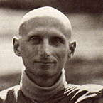

|
Venerable Kittisaro |
 |
|
This letter from Venerable Kittisaro was previously printed in the Devon
Vihara Newsletter, in September 1987
DEAR FRIENDS ON THE PATH, Greetings. Though I've seen many of you this summer here at the Vihara or away at one of the public talks I've given, I've not had the opportunity for quite a while to write a letter to you all. I think it's important that occasionally we reflect upon ourselves as a part of a larger community of beings all united in our inclination to Nibbana, peace. The transforming effect of a virtuous community is the power of Sangha. Though literally the word can mean any sort of group or gathering, its usage in Buddhist practice is quite specific. Sangha is one of the precious Triple Gems, one of the Three Refuges to which Buddhists continually go in their skilful effort to return and re-establish themselves on the Way, moment to moment. I go to Buddha, I go to Dhamma, I go to Sangha. What is this 'going to Sangha', Sangham saranam gacchami, and what does it have to do with Nibbana? In its strictest sense, Sangha refers to those beings who have had true insight and are firmly established in Right View. This Ariya Sangha, or group of Noble Ones, can be made up of men and women, ordained people and laity, young and old beings alike. Ariya Sangha don't even have to be 'Buddhists'! Members of this virtuous order are dedicated to practice: practising goodness, practising straightly -- avoiding the extremes of sensory indulgence or repressive self-mortification -- practising direct insight into the way things are, and endeavouring to master these great efforts so that thoughts, speech, and actions are conditioned by wisdom rather than ignorance. The members of the Ariya Sangha have had insight into the Four Noble Truths. They know the cessation of suffering, the experience of true peace. Though they may still be fooled by beguiling conditions of mind and body (except in the case of arahants, who are never fooled), they can return to the Path, re-establishing Right View from the perspective of knowing this moment as it is. They can begin again. Members of this Noble Sangha can 'let go'. This is wisdom. Basically, the Ariya Sangha is that group of wise beings. Why then is the third refuge 'I go to the Sangha'? Because wise beings are alive, flesh and blood, here and now, living examples of the Way. Their earthiness and tangibility often touches our heart when Buddha-Dhamma seems remote and abstract. Sangha brings the Teachings to life. We need not, though, be obsessed with designating 'who knows' and 'who doesn't', 'who's truly wise' and 'who isn't'. 'Will the REAL Sangha members please stand up!' Even if we do hear or think that he or she is attained, we still need to be able to deal with the doubt arising in our own mind. 'Does he really know?' More importantly, however, we need to develop that inner sense of what is wholesome and what isn't, what rings true and what doesn't. This discernment will tell us whether to trust someone or not. We don't need to rely on some official stamp of ecclesiastic authority -- 'He's a stream enterer,' 'She's fully realised,' 'He's a non-returner,' etc. In fact, if we are moved by such claims, then we tend to blindly follow others' opinions, and never get beyond doubt. Though it's impractical to designate 'Who's Who', the principal importance of a wise being remains. If we know individuals who inspire us with their presence, their practice, their insight, their goodness, then we should make an effort to respect them, learn from them, support them. The Buddha praised the great blessing of seeking out the wise rather than the foolish as companions. This is not to say blindly follow them. But just beginning to sense what is wise and what is not is the birth of the reflective mind. Then, to raise up that goodness in our hearts through various actions, we begin to bring those Sangha qualities into consciousness. After all, from a wise being we hear the true teaching. From the ignorant beings in our lives (and in our own minds) we hear about ME and YOU, TIME, I MUST HAVE, I MUST GET RID OF, and all the other 84,000 assorted delusions of greed, hatred and self-conceit. 'I go for refuge to the Sangha' means I will seek out a wise friend. The Buddha teaches that the wise ones are 'worthy of gifts, worthy of hospitality, worthy of offerings, worthy of respect. They give occasion for incomparable goodness to arise in the world.' Sangha is a true refuge. Let's remember that. Traditionally, Sangha refers to those ordained bhikkhus and bhikkhunis, who are giving their lives to the practice of the Way. But strictly speaking, the Noble Sangha is open to all beings who have had true insight. Having a robe and a shaven head is no guarantee whatsoever of wisdom and virtue. When the monastic life is lived sincerely and earnestly it is conducive to developing virtue, insight and true accomplishment. In fact, in any lifestyle how we practise determines whether Sangha is present -- not our robe, sex, occupation, or religious title. In a broader and quite practical sense, Sangha can and should include all beings inclining towards peace, virtue, wisdom and compassion. As opposed to the worldly stream carrying groups of beings into whirlpools of passion, dogmatic views and despair, the power of Sangha is that counter-current and flow of beings towards the oceanic calm of kindness, compassion, joy and serenity -- metta, karuna, mudita, upekkha. Good friends are so important for reminding us when we go astray, for inspiring and encouraging us, empowering us to begin again. These definitions of Sangha all focus on outer beings, wise teachers, virtuous friends. When there is doubt, wavering, confusion within, the outer manifestations of wisdom illumine the way. Friends and wise beings in our lives, however, are part of this mind, our mind. Our worldly habits say HE and SHE OUT THERE, but really those beings are arising in our own minds, just as do our thoughts -- and the thoughts of reading this letter as well. The qualities of wisdom and virtue that we recognise in others are also part of this mind that we call our own. Eventually we must realise that Sangha is essentially the boundless virtue within. Our refuge in Sangha, our contact with wise beings, keeps directing our hearts to seeing the Buddha within, that in us which knows, which is aware now, which is not deluded by our experience. Our contact with Sangha reminds us, encourages us, in effect offers us occasions conducive to using this Buddha Nature within so the Dhamma is revealed, so that Truth -- How Things Are -- becomes clear in our minds. Our contact with Sangha outside, as manifested in our wise friends and virtuous companions, reminds us to cultivate these very same qualities unshakeably within our hearts. True Sangha does not point to itself -- 'We are the special ones' -- but rather it points to the virtuous heart, to that skilful effort which brings us back again and again to practise the Dhamma. This summer I've had the good fortune to experience the power of Sangha in many ways: leading retreats; participating in discussion groups; attending an ordination ceremony with fellow monks and nuns, and our teacher Venerable Sumedho; and learning from other spiritually-oriented groups. In the most ordinary and immediate sense, I live with monks and anagarikas who are dedicated to developing the Way. We are supported by our many generous friends. This humbles us, for we know that as alms mendicants we cannot live alone, and yet it inspires and warms our hearts to receive. Those conditions then generate a new round of Sangha virtue as we naturally feel motivated to make ourselves worthy of offerings, to practise well, to offer what we can. Sangha generates Sangha generates Sangha: swelling spheres of goodness that meet and merge, leaving only joy and gratitude, the sense of inner and outer melted into one mind. These moments disappear when the overlapping spheres shrink down, the contracting power of identifying with ME and MINE collapsing space into independent alienated bubbles of being this or that. Trapped in our own private worlds, space is further splintered and fragmented into a maze of jagged beings, caught in a current of time, competing with one another for happiness. Life becomes very complicated and anxious, as we feel compelled to protect our fragile niche, or improve it, or take over someone else's. I think we have all felt like that. Now remember how you felt when you encountered Sangha, a wise being, one who is at ease. When we hear the Truth or see it, or feel its peaceful manifestation, we can relax. Faith and trust are born. Suddenly, miraculously, the myriad divided beings begin to awaken to the truth of this moment; and where there was separation, a unifying universality begins to pervade our heart as we come together in attentiveness, wise reflection, virtuous effort. The differences are still apparent, but they do not divide us, for we stand together inspired by the Way itself. Many times I've seen this miracle happen and then dissolve. Coming together often with our dhamma friends helps to generate and sustain this 'right seeing' and dissolve that habitual tendency to contract our spacious heart into rigid self views. Obviously, in our normal lives we will encounter many not-so-wise beings within and without. Learning to cope in this world with its many faces is painful and difficult, but with our refuge in Sangha we learn to find joy in Right Effort, no matter who's around. Then Sangha is established in our hearts, and all beings are our family, giving us precious teachings. Sangham saranam gacchami takes us home to the wise and virtuous one within. The virtuous ones 'without' remind us of the Way, and in gratitude we honour them and remember our true home: One Heart, One Knowing. May all beings find a good friend.
|
| Home Page |